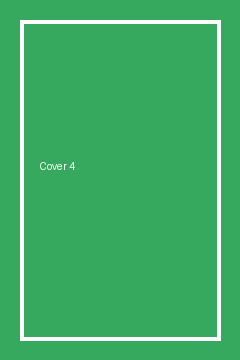

The Crimson Garden

£16.56
Product Description
The Crimson Garden is a poetry title that readers describe as absorbing and carefully paced. It follows a cast of characters through a season of change, mixing close observation with a quietly gripping plot. This edition includes a new afterword and a reading-group guide.
Product Information
| UPC | NW01022 |
|---|---|
| Genre | Poetry |
| Price (excl. tax) | £16.56 |
| Availability | Out of stock |
| Number of reviews | 6 |